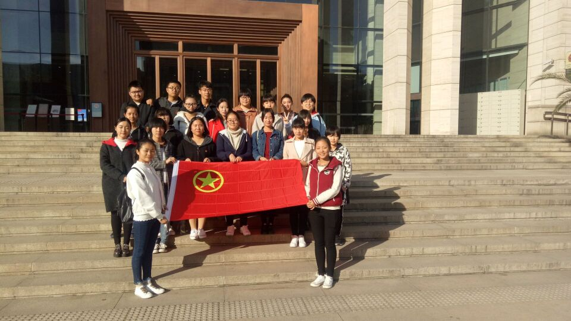
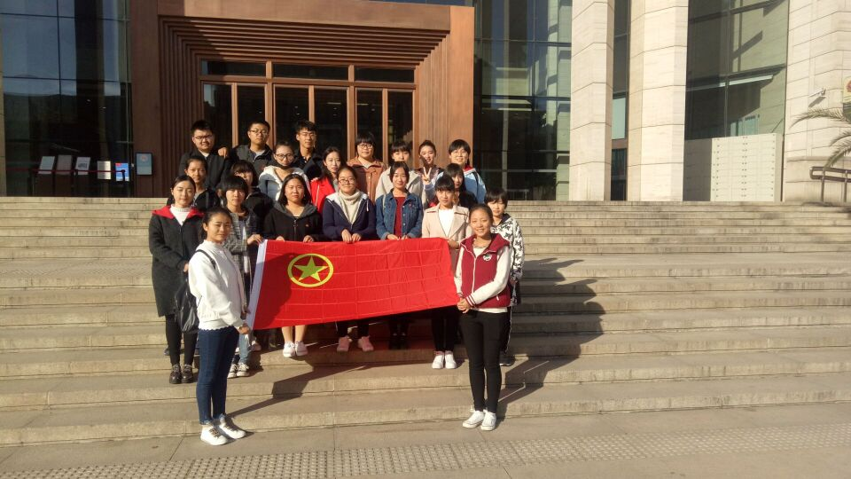

不忘初心跟党走 青春献礼新征程
——河北师范大学17级文院一班团日活动展示

不忘初心跟党走 青春献礼新征程
——河北师范大学17级文院一班团日活动展示



我们要以十九大精神为指引，用坚定的信念照亮人生路，用正确的价值观培育新风尚，用闪光的汗水成就栋梁材，用伟大的中国梦激扬青春梦，努力成为“有理想、有本领、有担当”的优秀青年。紧密团结在以习近平主席为核心的党中央周围，高举习近平新时代中国特色社会主义思想伟大旗帜。
中国梦是历史的、是现实的，也是未来的。而“中国的未来属于青年一代”，中华民族伟大复兴的中国梦终将在一代代青年的接力奋斗中变为现实。广大青年要坚定理想信念，志存高远，脚踏实地，培养自我的“工匠精神”，在中国梦领航的新时代中放飞青春，放飞理想。
中国的成长离不开老一辈的奋斗，更离不开我们新鲜血液的追求，今天的不离不弃，成就明天对梦想的生死相依;上一秒的冲动，会化作下一秒的无穷牵引力。十九大的使命在召唤我们，中华儿女已经奋勇争先。
在十九大召开之后，我们大学生会更加了解社会发展的进程，以更加积极的态度参与国家和社会建设，十九大倡导的十九大精神让我们为决胜全面建设小康社会、夺取新时代中国特色社会主义的伟大胜利、实现中华民族伟大复兴的中国梦、实现人民对美好生活的向往更加有信心和勇气。
《圆梦工程》不仅实现了孙中山先生描绘的蓝图，而且让中国人民创造的许多成就远远超出了孙中山先生百年前的《建国方略》设想。中国的跨海大桥，世界级的;中国的高速公路总里程13.1万公里，位居世界第一。中国高铁，总里程超过第2至第10位国家的总和，其中近六成都是这五年建成的。
通过这次纪录片的观看，让人们了解到，科技创新的发展成果给中国带来翻天覆地的变化，交通变得如此发达，人们出门旅游十分方便，走南闯北带来诸多便利，也给诸多行业带来福利，旅游业、快递服务业、交通运输业的业绩水平都有明显的提高，交通条件发达带动中国经济收增长入。
通过这次纪录片的观看，让人们了解到，科技创新的发展成果给中国带来翻天覆地的变化，交通变得如此发达，人们出门旅游十分方便，走南闯北带来诸多便利，也给诸多行业带来福利，旅游业、快递服务业、交通运输业的业绩水平都有明显的提高，交通条件发达带动中国经济收增长入。
这五年，砥砺奋进，不畏艰险； 看明朝，继续前行，辉煌中国